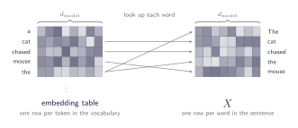
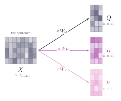
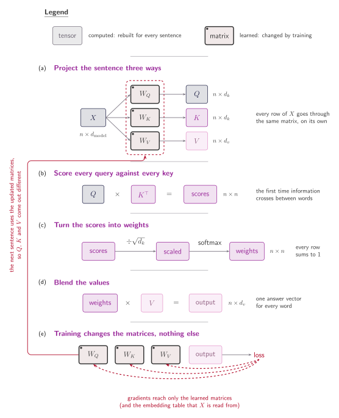

06 · Queries, Keys, and Values
Self-Attention
When the queries, the keys, and the values are all learned projections of the same sequence.
The sentence arrives as a matrix $X$, one row per word, each row the embedding of that word. Then we multiply it by three different weight matrices, one for each role, and out come $Q$, $K$, and $V$. Same $X$ every time, three different matrices and results. Let's understand what's happening here.
What a word looks like to the model
We have been using vectors for five sections now, but we never actually talked about where they come from in the first place. To the model, a word is just a row of numbers that it learns to understand. Every single word in the vocabulary gets its own vector of length $d_{\text{model}}$, which is called an embedding.
These start out as totally random guesses and get tweaked during training along with everything else. When we stack the embeddings for our five words on top of each other as rows, we get the entire sentence matrix $X$.

So $X$ has $n$ rows and $d_{\text{model}}$ columns: one row per word, one column per dimension. That is all we need from embeddings here. How they get trained, how text is split into tokens in the first place, why a learned vector beats a one-hot column, all of that is a subject of its own. From here on, $X$ is simply the sentence, written as numbers.
Where $Q$, $K$ and $V$ come from
Now we can build the three matrices every formula so far has taken for granted. Each of them is made by multiplying $X$ by its own weight matrix. Three multiplications and three results based on the same $X$. That is where the self in self-attention comes from: the queries, the keys and the values are all built out of the same sequence. That is,
The three new objects here are $W_Q$, $W_K$ and $W_V$, the weight matrices. They are parameters of the model, exactly like the embeddings in the sense that they start as random numbers and are adjusted by training. They do not depend on the sentence. The same three matrices are used for every sentence the model ever sees, and it is only $X$ that changes.
Their shapes follow from what each one has to do:
- $X$ → $n \times d_{\text{model}}$, one row per word in the sentence.
- $W_Q$ and $W_K$ → $d_{\text{model}} \times d_k$, so both $Q$ and $K$ come out as $n \times d_k$.
- $W_V$ → $d_{\text{model}} \times d_v$, so $V$ comes out as $n \times d_v$.
$W_Q$ and $W_K$ have to produce the same width, because $QK^{\top}$ only exists if queries and keys are the same length. That is the constraint we ran into back in section 03, when we noticed two vectors must match in length to have a dot product at all. This is where it is actually enforced.

The projections are row-wise. Row $i$ of $Q$ is row $i$ of $X$ times $W_Q$, so word $i$'s query is built from word $i$'s embedding and nothing else. The same matrix is applied to every word, and no word's projection looks at any other. All the mixing happens later, in the projection step. Up to this point the five words have not been multiplied or interacted.
Three matrices, and what training changes
Before the argument, here is the whole mechanism on one page, with one thing marked that no earlier figure has shown: which parts are learned and which are computed at every step.

Back in section 02 we said a key and a value are allowed to be different things, and it was hard to see why anyone should care. Now we can see it. $W_Q$, $W_K$ and $W_V$ are separate parameters, so the model can learn one projection that makes a word easy to find and a completely different one for what that word hands over. If they shared a single matrix the two would collapse into the same information, and a word could only ever offer exactly its unique meaning and not its collective influence over a context.
Note that at any point we wrote any question to be asked as we were doing before . $W_Q$, $W_K$ and $W_V$ begin as random numbers, and whatever chased ends up asking is simply whatever direction turned out to reduce the loss. In section 05 we said a query is a vector rather than a sentence in English. Now we can say something stronger: the query is not designed at all.
There is another point to why we need three matrices. Suppose we did share a single matrix, $W_Q = W_K = W$. Then $Q$ and $K$ are the same thing, both equal to $XW$, and the score matrix becomes $$QK^\top = (XW)(XW)^\top$$ which is symmetric. Entry $(i,j)$ equals entry $(j,i)$, always. Sharing the matrix would force how much "chased" attends to "mouse"" to be exactly how much "mouse" attends to "chased"", for every sentence, at every point in training, with no way for the model to escape it. Language is not built that way. A verb needs its object far more than the object needs the verb, and a pronoun needs its antecedent far more than the antecedent needs the pronoun.